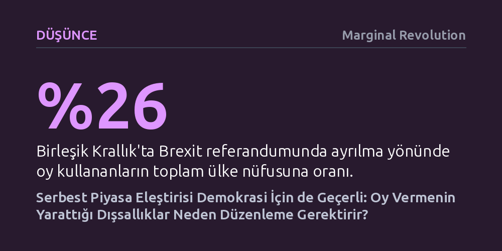

DUSUNCE · Marginal Revolution · 2026-10-07
Serbest piyasa kapitalizmine yöneltilen dışsallık eleştirileri, kuralsız işleyen 'bırakınız yapsınlar' demokrasisi için de doğrudan geçerlidir. Bireysel oylar çevre kirliliği gibi üçüncü taraflara maliyet yüklediğinden, demokratik süreçlerin yasal düzenlemelerle denetlenmesi meşru bir gereklilik haline gelir.
Demokrasiyi kendiliğinden kusursuz bir alan sayma yanılgısını kırarak, oy vermenin de tıpkı çevre kirliliği gibi başkalarına maliyet yükleyen bir eylem olduğunu ve kurumsal denetime ihtiyaç duyabileceğini gösterir.

Modern iktisat ve siyaset felsefesinde, devlet müdahalesinden bütünüyle yalıtılmış 'bırakınız yapsınlar' (laissez-faire) kapitalizmi fikri geniş kitlelerce ve kurumsal çevrelerce neredeyse tamamen terk edilmiştir. Piyasaların denetimsiz bırakıldığında tekelleşmeye, çevre kirliliğine veya yıkıcı bilgi asimetrilerine yol açtığı kabul edilir; bu nedenle piyasa aksaklıklarını giderecek kamu müdahaleleri meşru görülür. Buna karşılık, demokratik süreçlerin ve oy verme mekanizmasının herhangi bir kalite filtresi veya düzenleme olmadan kendi haline bırakılması şaşırtıcı bir biçimde geniş kabul görmeye devam etmektedir.
Oysa serbest piyasa kapitalizmine yöneltilen temel mantıksal eleştiriler, doğrudan kuralsız işleyen demokrasi modeline de uygulanabilir. Kapitalizmin dizginsiz bırakıldığında piyasa başarısızlıklarına sürüklenmesi ne kadar kaçınılmazsa, hiçbir yetkinlik veya hesap verebilirlik denetimine tabi tutulmayan seçmen iradesinin de benzer yapısal başarısızlıklar üretmesi o kadar olağandır. İki alan arasındaki bu çelişki, demokratik kurumları eleştiriden muaf tutma eğilimimizin iktisadi rasyonaliteyle bağdaşmadığını ortaya koyar.
Oy kullanma eylemi iktisattaki negatif dışsallık kavramıyla birebir örtüşür. Bireysel bir otomobil sürücüsünün veya uçak yolcusunun yarattığı çevre kirliliği tek başına önemsiz görünür; kişi ulaşım sağlamanın getirdiği dolaysız faydayı tek başına elde ederken, karbon salınımının maliyetini tüm topluma paylaştırır. Sandık başında da özdeş bir mekanizma işler: Tek bir seçmenin sorumsuzca ya da bilgisizce kullandığı oyun kişisel maliyeti sıfıra yakındır; ancak kolektif olarak ortaya çıkan yanlış kararların faturası tüm topluma çıkarılır.
Bu dinamiğin en somut örneklerinden biri Birleşik Krallık'ın Avrupa Birliği'nden ayrılma (Brexit) sürecinde görüldü. Referandumda Birleşik Krallık toplam nüfusunun yalnızca yüzde 26'sı ayrılma yönünde oy kullandı; buna karşın kararın doğurduğu ağır ekonomik ve siyasi maliyetleri sandığa gitmeyenler, referandumda kaybedenler, oy hakkı bulunmayan çocuklar, gelecek nesiller ve hatta yabancı ülke vatandaşları taşımak zorunda kaldı. Tıpkı çevre kirliliğinde olduğu gibi, başkalarına maliyet yükleyen bir eylemin düzenlenmesi ilk bakışta meşruysa, oy verme sürecinin de düzenlenmesi aynı derecede meşrudur.
Aslında bugün hemen herkes demokrasinin belirli kurallarla sınırlandırılmasını zaten kanıksamış durumdadır. Kimi meselelerin halk oylamasına götürülüp kimilerinin seçilmiş liderlere, bağımsız yargıçlara veya bürokrasiye devredilmesi birer demokratik düzenleme biçimidir. Seçim yaşı sınırları, adaylık şartları, kampanya bağışlarının kısıtlanması, kamusal eğitimin seçmen yetkinliğini artırmak için finanse edilmesi ve oy alım satımının yasaklanması, kuralsız demokrasinin halihazırda engellendiğini kanıtlar.
Genel ve eşit oy hakkına dokunmadan da sandık sürecini iyileştirecek yeni düzenlemeler tasarlanabilir. Makalede tartışılan öneriler arasında; vatandaşlara gönüllü bir yurttaşlık bilgisi sınavını geçmeleri karşılığında teşvik ödemesi yapılması, seçim vaatlerinin resmi olarak izlenerek yanıltıcı beyanlara para cezası kesilmesi ve siyasi reklamların tıpkı ilaç reklamları gibi katı doğruluk standartlarına tabi tutulması yer alır. Ayrıca kritik anayasal kararlarda basit çoğunluk yerine nitelikli çoğunluk şartı aranması da dışsallık maliyetlerini asgariye indirebilir.
Elbette bu tür düzenleme önerileri çok haklı endişeleri de beraberinde getirir. Seçim kurallarını denetleyecek kurumların özel çıkar gruplarınca ele geçirilmesi, bürokratların taraflı kararlar alması veya iyi niyetle getirilen kuralların öngörülemeyen otoriter sonuçlar doğurması son derece gerçek risklerdir. Demokrasiyi korumak adına kurulan bir denetim mekanizması, iktidarın muhalefeti susturma aracına dönüşebilir.
Ancak tartışmanın can alıcı noktası tam olarak buradadır: Bu itirazların tümü, devletin ekonomiye müdahalesine karşı geliştirilen klasik 'bırakınız yapsınlar' savunmasıyla birebir aynıdır. Piyasada devlet müdahalesini kurumların yozlaşabileceği kaygısıyla eleştirenlere şüpheyle yaklaşılırken, aynı mantığın sandık denetimine karşı bir refleks olarak hemen benimsenmesi, demokratik düşüncedeki çifte standardı açıkça sergiler.